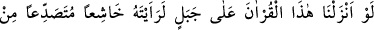
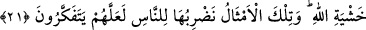

BİZ BU KUR’AN’I
BİR DAĞA İNDİRSEYDİK
21. Eğer biz bu Kur’an’ı bir dağa indirseydik, muhakkak ki onu, Allah
korkusundan baş eğerek, parça parça olmuş görürdün. Bu misalleri insanlara
düşünsünler diye veriyoruz.
“Eğer biz bu Kur’anı bir dağa indirseydik, muhakkak ki onu, Allah korkusundan
baş eğerek, parça parça olmuş görürdün.” Yâni ey insanlar, size indirilen ve bir takım
yüceltici fenleri kapsayan bu şânı yüce, Kur’an’ı... Yahut ey Rasûl! Sana indirilen
Kur’an’ı… Ya da muhataptan hitâb-ı gaybe iltifat ile, “Muhammed’e indirilen Kur’an’ı”
demektir.
İbn Abbas (r.a.) şöyle demiştir: Musa (a.s.) zamanında Allah Teâlâ ilâhî kelâmı
göklere yüklediğinde onun levhalarının ağırlığından dolayı, dağlar, yükünün ağırlığı
sebebiyle bağıran deve gibi inlediler. Bunun üzerine Allah Teâlâ her harfine birer melek
gönderdi ama onlar da ilâhî kelamı taşıyamadılar. Bunun üzerine Allah Teâlâ Hz.
Musa’ya Tevrat’ı, Hz. İsa’ya İncil’i ve Hz. Muhammed (a.s.)’a da Kur’an’ı hafifletti.
Âyetteki işâret edatından sonra işâret edilen bölümlerden tertip edilmiş bir cümleye
gerek yoktur. Aksine bazı işâretlerin hakikaten, diğer bazılarının da hükmen bulunması
yeterlidir. Bu âyetteki işâret isminin işâret ettiği cümle, önceki âyetteki “Ey îman
edenler! Allah’tan korkun...” ifâdesi de olabilir.
Kur’an lafzı, Kur’an’ın tamamına denilebildiği gibi Kur’an’ın bir kısmına da
denilebilir. Onun âyetlerinden her biri hakikaten veya sözlük itibariyle Kur’an isminde
ortak oldukları; yahut onunla alakalı bulundukları için mecâzen Kur’an’ın bir kısmına
Kur’an denir. Bu sebeple burada, işâret edilen kısım itibarı ile hatırlatma olur.
Âyette geçen dağdan maksad, herhangi bir dağdır. Bunlar, Telûl dağının dışında altı
bin altı yüz altmış üç dağdan ibârettir. Zehretü’r-riyad adlı eserde de böyle
kaydedilmiştir. Telûl diğer tepelerden biraz yüksekçe, büyük ve uzundur, yer küresinin
ekseni durumundadır. Tek başına kalırsa en yüksek durumdaki dağ demektir. Dağın
sağlamlığından dolayı mânâlarına itibar edilerek sözler türetilmiştir. “Filan kişi dağ
gibidir, devrilmez” denilmiştir. Bu sözle sâbit kalmak ve sağlam olmak mânâsı tasvir
edilir. “Allah onun cibilliyetini öyle yaratmıştır” sözü de cebel kökünden alınmıştır. Bu
sözle de tabîatını tanıtmaya çalıştığı kişinin huyunu anlatmanın zor olduğunu ifâde etmiş
olmaktadır. Dağ, katılıkta ve kendisine çarpan şeylere karşı etkilenmeden dayanmakta